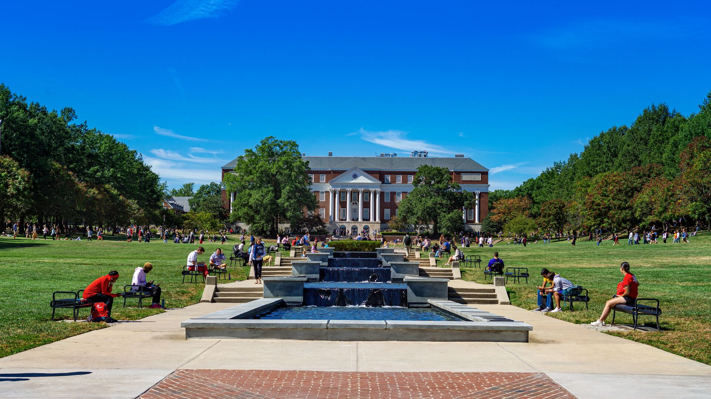

Jiayuan Shen "images/umd1.png" alt="This is a UMD photo"77
Album Names
Yo La Tengo - Fade
ALL OUT - MORE
RISE - Rise
Phoenix - Phoenix
Warriors - Warriors
Image Carousel
prev

next
description of images: Four different type of mochi